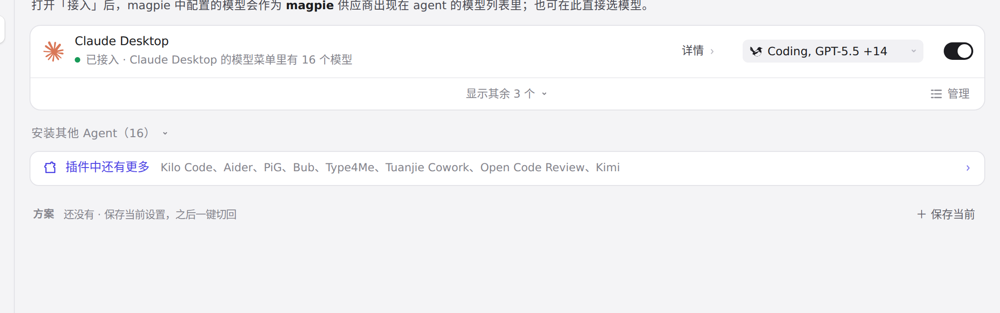
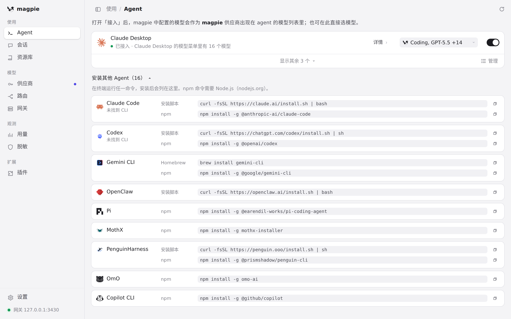
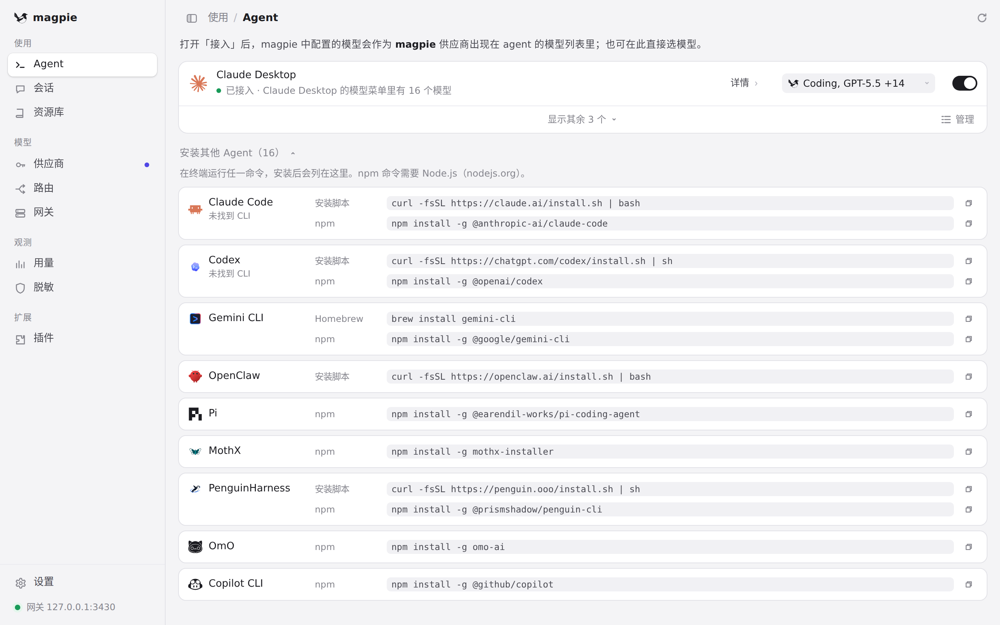

#1088 界面预览
commit 28a101e · 回到 PR · Agent 页新增 OpenClaw：未安装时出现在「安装其他 Agent」里，带官方安装脚本入口；安装后该 Agent 行里提供主模型与有序降级模型的行内编辑（自动保存、上移、移除、添加），并新增其中/英/繁中/日/德文案和彩色图标。
红线是鼠标走过的轨迹，红色圆环是一次点击；底部文字是这一步在做什么。空格暂停，← → 逐段查看。

安装列表里的 OpenClaw · 折叠状态下的「安装其他 Agent」

安装列表里的 OpenClaw · 安装列表里的 OpenClaw 一行

安装列表里的 OpenClaw · OpenClaw 的安装命令